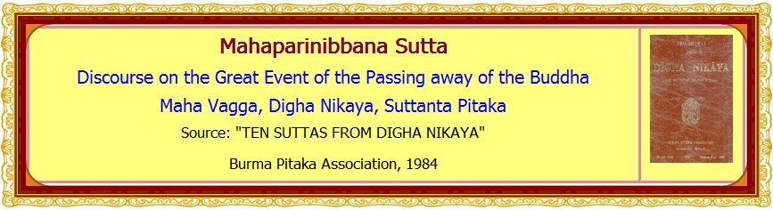

131. Thus have I heard:
At one time the Bhagava was residing at Rajagaha, on the Gijjhakuta 1 hill. During that time the king of Magadha, Ajatasattu, son of Queen Vedehi, wanted to attack the Vajji princes, and declared thus: "I shall annihilate these Vajji princes, powerful and mighty2 as they are. I shall destroy them, bring them to utter rack and ruin."
132. Then King Ajatasattu of Magadha, son of Queen Vedehi, called to him the Chief Minister of Magadha, the brahmin Vassakara, and said to him:
"Come, brahmin, go to the Bhagava, and pay homage at his feet, carrying my words. Enquire whether the Bhagava is free from illness and affliction, whether he is enjoying bodily vigour, strength, ease and comfort. Say to the Bhagava 'Venerable Sir, King Ajatasattu of Magadha, son of Queen Vedehi, pays homage at your feet. He enquires by me whether the Bhagava; is free from illness and affliction, whether he is enjoying bodily vigour, strength, ease and comfort'. And say thus to him, 'He wishes to attack the Vajji princes and has declared that he will annihilate the Vajji princes, powerful and mighty as they are, and that he will destroy them and bring them to utter rack and ruin.' And carefully noting what the Bhagava says, repeat to me his remarks. The Tathagatas never speak what is untrue."
1. Gijjhakuta: mouth of vultures.
2. powerful and mighty, through harmonious union and military preparedness.
133. The brahmin Vassakara, Chief Minister of Magadha, said "Very well, Your Majesty," in assent to King Ajjatasattu of Magadha, son of Queen Vedehi. And he had excellent and elegant carriages harnessed, and mounting an excellent carriage, left Rajagaha for the Gijjhakuta hill, accompanied by other excellent carriages. After proceeding as far as the carriage might properly go, he dismounted from the carriage, and approached the Bhagava on foot. After offering courteous greetings to the Bhagava and having said memorable words of felicitation, the Chief Minister, the brahmin Vassakara, seated himself on one side, and thus addressed the Bhagava:
"Venerable Gotama, King Ajatasattu of Magadha, son of Queen Vedehi, pays homage at your feet. He enquires after (the state of) your health, your vigour, strength, ease and comfort. He wishes to attack the Vajji princes, and has declared that he will annihilate them, powerful and mighty as they are, and that he will destroy them and bring them to utter rack and ruin."
Seven Factors of Non-Decline1 of Kings and Princes
134. At that time the Venerable Ananda was at the back of the Bhagava, fanning him.
The Bhagava said to the Venerable Ananda:
Ananda, do the Vajji princes meet in assembly frequently? Do they have meetings many times? What have you heard?
"Venerable Sir, I have heard that the Vajji princes meet in assembly frequently, and that they have meetings many times."
Ananda, so long as the Vajji princes assemble frequently and have many meetings, the furtherance of their welfare and prosperity is to be expected, not their decline. (1)
Ananda, do the Vajji princes assemble in harmony and unity and do they leave the assemblies in harmony and unity? And do they carry out the affairs of the Vajji country in harmony and unity? What have you heard?
"Venerable Sir, I have heard that the Vajji princes assemble in harmony and unity, that they leave the assemblies in harmony and unity, and that they carry out the affairs of the Vajji country in harmony and unity."
Ananda, so long as the Vajji princes assemble and disperse in harmony and unity, and carry out in harmony and unity the affairs of the Vajji country, the furtherance of their welfare and prosperity is to be expected, not their decline. (2)
Ananda, do the Vajji princes refrain from ordaining what has not been ordained before, and do they refrain from abolishing what has been ordained before, and do they act in conformity with the ancient, established Vajji practices, customs and institutions? What have you heard?
"Venerable Sir, I have heard that the Vajji princes refrain from ordaining what has not been ordained before, that they refrain from abolishing what has been ordained before, and that they act in conformity with the ancient, established Vajji practices, customs and institutions."
Ananda, so long as the Vajji princes refrain from ordaining what has not been ordained before, refrain from abolishing what has been ordained before, and act in conformity with the ancient, established Vajji practices, customs and institutions, the furtherance of their welfare and prosperity is to be expected, not their decline. (3)
Ananda, do the Vajji princes treat their elders with respect, esteem, veneration and reverence, and do they consider that those elders ought to be listened to? What have you heard?
"Venerable Sir, I have heard that the Vajji princes treat their elders with respect, esteem, veneration and reverence, and consider that those elders ought to be listened to.
"Ananda, so long as the Vajji princes treat their elders with respect, esteem, veneration and reverence, and consider that those elders ought to be listened to, the furtherance of their welfare and prosperity is to be expected, not their decline. (4)
Ananda, do the Vajji princes refrain from forcibly abducting women and maidens and detaining them? What have you heard?
"Venerable Sir, I have heard that the Vajji princes refrain from forcibly abducting women and maidens and detaining them."
Ananda, so long as the Vajji princes refrain from forcibly abducting women and maidens and detaining them, the furtherance of their welfare and prosperity is to be expected, not their decline. (5)
Ananda, do the Vajji princes show respect, esteem, veneration and reverence towards their shrines, within and without the city, and do they cause appropriate offerings and oblations to be made to those shrines as formerly, without neglect or omission? What have you heard?
"Venerable Sir, I have heard that the Vajji princes show respect, esteem,- veneration and reverence towards their shrines, within and without the city, and that they cause appropriate offerings and oblations to be made to those shrines as formerly, without neglect or omission."
Ananda, so long as the Vajji princes show respect, esteem, venation and reverence towards their shrines, within and without the city, and cause appropriate offerings and oblations to be made to those shrines as formerly, without neglect or omission, the furtherance of their welfare and prosperity is to be expected, not their decline. (6)
Ananda, do the Vajji princes take appropriate measures to afford proper care, protection an d security to the arahats2 so that those arahats who have not yet come to the Vajji country may come, and so that those who have already come may live in the Vajji country in ease and comfort? What have you heard?
"Venerable Sir, I have heard that the Vajji princes take appropriate measures to afford proper care, protection and security to the arahats so that those arahats who have not yet come to the Vajji country may come, and so that those who have already come may live in the Vajji country in ease and comfort."
Ananda, so long as the Vajji princes take appropriate measures to afford proper care, protection and security to the arahats so that those arahats who have not yet come to the Vajji country may come, and so that those who have already come may live in the Vajji country in ease and comfort, the furtherance of their welfare and prosperity is to be expected, not their decline. (7)
1. Non-Decline or Non-Diminution: aparihana from parihana, lessening, decline, deterioration. The opposite is vuddhi, increase, growth, prosperity, furtherance.
2. The arahats: the Commentary implies that here the term Arahanto (Arahats) includes all ascetics who have left the borne life.
135. Then, the Bhagava said to the brahmin Vassakara, Chief Minister of Magadha:
Brahmin, at one time I was staying at the shrine called Sarandada in Vesali. At that titre I taught the Vajji princes these seven aparihdniya factors of Non- Decline.
Brahmin, so long as these seven factors of Non-Decline endure among the Vajji princes, and so long as the Vajji princes observe and apply these seven factors thoroughly, the furtherance of their prosperity, their welfare, is to be expected. not their decline.
Then the brahmin Vassakara, Chief Minister of Magadha, replied thus to the Bhagava;:
"Venerable Gotama, if the Vajji princes are endowed with even a single one of these factors of Non-Decline, the furtherance of their prosperity is to be expected, not their decline; how much more so if they should be endowed with all the seven factors!
"Venerable Gotama, there is no possibility of King Ajatasattu of Magadha, son of Queen Vedehi, overcoming the Vajji princes in battle, unless means of cunning persuasion or of causing discord (by breaking up their unity) are employed.
"Now, Venerable Gotama, we shall depart. We have many affairs (to attend to), much to do."
Brahmin, go when you wish (lit., you know the time to go), the Bhagava Said.
Then the Chief Minister of Magadha, the brahmin Vassakara, delighted and pleased with the Bhagava's discourse, rose from his seat and departed.
Seven Factors of Non-Decline of Bhikkhus
136. The Bhagava, soon after the Brahmin Vassakara, Chief Minister of Magadha, had left, said to the Venerable Ananda, "Go, Ananda, and let all the bhikkhus who live around Rajagaha gather in the assembly hall."
Ananda, saying "Very well, Venerable Sir," by way of assent, caused all the bhikkhus living around Rajagaha to gather in the assembly hail, and approaching the Bhagava and making obeisance to him stood on one side. Then Ananda said to the Bhagava:
"Venerable Sir, the community of bhikkhus is assembled. It is for the Bhagava to go as and when he wishes."
Then the Bhagava arose from where he was sitting, and going to the assembly hall and taking the seat prepared for him, addressed the bhikkhus thus:
Bhikkhus, I shall expound to you the seven factors of Non-Decline. Listen attentively and bear it well in mind. I shall speak.
The bhikkhus assenting respectfully, the Bhagava gave this discourse:
Bhikkhus, so long as the bhikkhus meet in assembly frequently, and have meetings many times, the furtherance of their (spiritual) progress is to be expected, not its decline. (1)
Bhikkhus, so long as the bhikkhus assemble and disperse from assembly in harmony and unity, and attend to the affairs of the Samgha (the community of bhikkhus) in harmony and unity, the furtherance of their (spiritual) progress is to be expected, not its decline. (2)
Bhikkhus, so long as the bhikkhus do not prescribe that (viz., rules) which has not been prescribed, and do not abolish what has been prescribed and observe well the prescribed rules (of the Discipline of Bhikkhus), conducting themselves accordingly, the furtherance of their (spiritual) progress is to be expected, not its decline. (3)
Bhikkhus, so long as the bhikkhus respect, esteem, venerate and revere the bhikkhu elders who are of long standing (in their bhikkhuhood) who had long since become bhikkhus, who are the fathers and leaders of the Samgha, and consider that those bhikkhu elders ought to be listened to, the furtherance of the bhikkhus' (spiritual) progress is to be expected, not its decline. (4)
Bhikkhus, so long as the bhikkhus do not fall under the power, the influence of that tanha, craving, which arises (within them) and which leads to rebirth, the furtherance of their (spiritual) progress is to be expected not its decline. (5)
Bhikkhus, so long as the bhikkhus desire a sequestered life in remote forest dwellings, the furtherance of their (spiritual) progress is to be expected, not its decline. (6)
Bhikkhus, so long as the bhikkhus maintain mindfulness in themselves, in order that those fellow-practitioners of the life of purity who cherish virtue and who have not yet come might come, and those (of the same nature) who have come might live in comfort and ease, the furtherance of their (spiritual) progress is to be expected, not its decline. (7)
Bhikkhus, so long as these seven factors of Non-Decline endure among the bhikkhus, and so long as the, bhikkhus observe and apply these seven factors thoroughly, the furtherance of the (spiritual) progress of the bhikkhus is to be expected, not its decline.
A Second Set of Seven Factors of Non-Decline
137. Bhikkhus, I shall further expound to you another set of seven factors of Non-Decline. Listen attentively to this exposition and bear it well in mind.
The bhikkhus assenting respectfully, the Bhagava gave this discourse:
Bhikkhus, so long as the bhikkhus do not delight in, are not given to pleasure in, and make no endeavour to derive enjoyment from (mundane) activities or transactions, the furtherance of their (spiritual) progress is to be expected, not its decline. (1)
Bhikkhus, so long as the bhikkhus do not delight in, are not given to pleasure in, and make no endeavour to enjoy idle talk, the furtherance of their (spiritual) progress is to be expected, not its decline. (2)
Bhikkhus, so long as the bhikkhus do not delight in, are not given to pleasure in, and make no endeavour to enjoy (slothfulness and) sleeping, the furtherance of their (spiritual) progress is to be expected, not its decline. (3)
Bhikkhus, so long as the bhikkhus do not delight in, are not given to pleasure in, and make no endeavour to enjoy the company of associates, the furtherance of their (spiritual) progress is to be expected, not its decline.
Bhikkhus, so long as the bhikkhus are without evil desires (such as the desire to boast of non-existent attainments or achievements), and so long as they do not fall under the influence of evil desires, the furtherance of their (spiritual) progress is to be expected. not its decline. (5)
Bhikkhus, so long as the bhikkhus do not associate with evil friends or evil companions, and are not inclined towards evil companionship, the furtherance of their (spiritual) progress is to be expected, not its decline. (6)
Bhikkhus, so long as the bhikkhus do not stop halfway (before attainment of Arahatship), through achieving some small spiritual attainment, the furtherance of their (spiritual) progress is to be expected, not its decline. (7)
Bhikkhus, so long as these seven factors of Non-Decline endure among the bhikkhus, and so long as the bhikkhus observe and apply these seven factores thoroughly, the furtherance of the (spiritual) progress of the bhikkhu is to be expected, not its decline.
A Third Set of Seven Factors of Non-Decline
138. Bhikkhus, I shall further expound to you another set1 of seven factors of Non-Decline. Listen attentively to this exposition and bear it well in mind.
The bhikkhus assenting respectfully, the Bhagava gave this discourse:
Bhikkhus, so long as the bhikkhus are endowed with confidence based on conviction, saddha2, the furtherance of the (spiritual) progress of the bhikkhus is to be expected, not its decline. (1)
Bhikkhus, so long as the bhikkhus have a sense of moral shame, hiri3, the furtherance of the (spiritual) progress of the bhikkhus is to be expected, not its decline. (2)
Bhikkhus, so long as the bhikkhus have fear of wrong-doing, ottappa,4 the furtherance of the (spiritual) progress of the bhikkhus is to be expected, not its decline. (3)
Bhikkhus, so long as the bhikkhus have wide learning and knowledge, the furtherance of the (spiritual) progress of the bhikkhus is to be expected, not its decline. (4)
Bhikkhus, so long as the bhikkhus are firmly energetic and industrious, the furtherance of the (spiritual) progress of the bhikkhus is to be expected, not its decline. (5)
Bhikkhus, so long as the bhikkhus have sustained mindfulness, the furtherance of the (spiritual) progress of the bhikkhus is to be expected, not its decline. (6)
Bhikkhus, so long as the bhikkhus are possessed of insight and wisdom5, the furtherance of their (spiritual) progress is to be expected, and not its decline. (7)
Bhikkhus, so long as these seven factors of Non-Decline endure among the bhikkhus, and so long as the bhikkhus observe and apply these seven factors thoroughly, the furtherance of their (spiritual) progress is to be expected, not its decline.
1. another set: the third set consists of seven good qualities (satta saddhamma).
2. saddha: usually rendered 'faith' which might, however, be confused with blind faith.
3. hiri: loathing of, or aversion to, immoral deeds, hence an inner sense of decency.
4. ottappa: fear of committing immoral deeds, hence reflected in decent conduct.
5. insight and wisdom: pannavanto: The Commentary has "vipassana panna" i.e., Wisdom gained from Insight Meditation, not ordinary wisdom.
A Fourth Set of Seven Factors of Non-Decline
139. Bhikkhus, I shall further expound to you another set1of seven factors of Non-Decline. Listen attentively to this exposition and bear it well in mind.
The bhikkhus assenting respectfully, the Bhagava gave this discourse:
Bhikkhus, so long as the bhikkhus cultivate Mindfulness, sati, a factor which leads to Enlightenment, the furtherance of the (spiritual) progress of the bhikkhus is to be expected, not its decline. (1)
Bhikkhus, so long as the bhikkhus cultivate investigative knowledge of phenomena, dhammavicaya2, leading to Enlightenment, the furtherance of the (spiritual) progress of the bhikkhus is to be expected, not its decline. (2)
Bhikkhus, so long as the bhikkhus cultivate effort, viriya3, leading to Enlightenment, the furtherance of the (spiritual) progress of the bhikkhus is to be expected, not its decline. (3)
Bhikkhus, so long as the bhikkhus cultivate delightful satisfaction, piti, leading to Enlightenment, the furtherance of the (spiritual) progress of the bhikkhus is to be expected, not its decline. (4)
Bhikkhus, so long as the bhikkhus cultivate serenity, passaddhi, leading to Enlightenment, the furtherance of the (spiritual) progress of the bhikkhus is to be expected, not its decline. (5)
Bhikkhus, so long as the bhikkhus cultivate Concentration, samadhi, leading to Enlightenment, the furtherance of the (spiritual) progress of the bhikkhus is to be expected, not its decline. (6)
Bhikkhus, so long as the bhikkhus cultivate equanimity, upekkha4, leading to Enlightenment, the furtherance of the (spiritual) progress of the bhikkhus is to be expected, not its decline. (7)
Bhikkhus, so long as these seven factors of Non-Decline endure among the bhikkhus, and so long as the bhikkhus observe and apply these seven factors thoroughly, the furtherance of their (spiritual) progress is to be expected, not its decline.
1. The fourth set is of the Seven Factors of Enlightenment, satta bojjhanga; bodhi=Enlightenment, Insight into the Four Noble Truths,+ anga=factor or limb.
2. dhammavicaya: dhamma, (phenomena) here means mind and matter (namarupa).
3. viriya: same as samma vayama, Right Effort.
4. upekkha: Equanimity is mental equipoise, not mere indifference. It is the result of a calm concentrative mind, a quiet mind.
A Fifth Set of Seven Factors of Non-Decline
140. Bhikkhus, I shall further expound to you another set1of seven factors of Non-Decline. Listen attentively to this exposition and bear it well in mind.
The bhikkhus assenting respectfully, the Bhagava gave this discourse:
Bhikkhus, so long as the bhikkhus cultivate the perception of Impermanence, anicca, the furtherance of the (spiritual) progress of the bhikkhus is to be expected, not its decline. (1)
Bhikkhus, so long as the bhikkhus cultivate the perception of Non-Soul, Non-Ego, Non-Self, anatta the furtherance of the (spiritual) progress of the bhikkhus is to be expectcd, not its decline. (2)
Bhikkhus, so long as the bhikkhus cultivate the perception of the corruptness, the impurity (of the body)asubha, the furtherance of the (spiritual) progress of the bhikkhus is to be expected, not its decline. (3)
Bhikkhus, so long as the bhikkhus cultivate the perception of the danger of all formations of existence, adinava, the furtherance of the (spiritual) progress of the bhikkhus is to be expected, not its decline. (4)
Bhikkhus, so long as the bhikkhus cultivate the perception of abandonment, pahana2, the furtherance of the (spiritual) progress of the bhikkhus is to be expected, not is decline. (5)
Bhikkhus, so long as the bhikkhus cultivate the perception of detachment from desire, viraga, the furtherance of the (spiritual) progress of the bhikkhus is to be expected, not its decline. (6)
Bhikkhus, so long as the bhikkhus cultivate the perception of cessation, nirodha3, the furtherance of the (spiritual) progress of the bhikkhus is to be expected, not its decline. (7)
Bhikkhus, so long as these seven factors of Non-Decline endure among the bhikkhus, and so long as the bhikkhus observe and apply these seven factors thoroughly, the furtherance of their (spiritual) progress is to be expected, not its decline.
1. The fifth set is a set of seven perceptions.
2. pahana: abandonment or discarding (of kilesas, moral defilements).
3. nirodha: cessation (of kilesas, moral defilements).
Six Factors of Non-Decline of Bhikkhus
141. Bhikkhus, I shall expound to you six factors1 of Non-Decline. Listen attentively to this exposition and bear it well in mind.
The bhikkhus assenting respectfully, the Bhagava gave this discourse:
Bhikkhus, so long as the bhikkhus minister to fellow disciples2 with loving-kindness in deed and action, both openly and in private, the furtherance of their (spiritual) progress is to be expected, not its decline. (1)
Bhikkhus, so long as the bhikkhus minister to fellow disciples with loving-kindness in speech, both openly and in private, the furtherance of their (spiritual) progress is to be expected, not its decline. (2)
Bhikkhus, so long as the bhikkhus minister to fellow disciples with loving-kindness in thought, both openly and in private, the furtherance of their (spiritual) progress is to be expected, not its decline. (3)
Bhikkhus, so long as the bhikkhus share with virtuous fellow-disciples such offerings and gifts as they receive in accordance with the rules and prescriptions of the Order of Bhikkhus, including, to say the least, even the contents of their alms-bowl, without making use of them apart from the others, the furtherance of their (spiritual) progress is to be expected, not its decline. (4)
Bhikkhus, so long as the bhikkhus, both openly and in private, together with fellow disciples in equal observance, abide by those precepts of sila3, morality, which lead to liberation (from slavery to tanha, craving), which are praised by the wise, which are not subject to tanha and ditthi, craving and wrong views, which are conducive to concentration of mind, and which are unbroken, intact, unblemished and unspotted, (thus complete, perfect and pure), the furtherance of the (spiritual) progress of the bhikkhus is to be expected, not its decline. (5)
Bhikkhus, so long as the bhikkhus, both openly and in private, together with fellow-disciples in equal insight, abide in that faultless and pure insight 4 which leads to Nibbana, and which truly leads him who acts upon it to the utter destruction of dukkha, the furtherance of the (spiritual) progress of the bhikkhus is to be expected, not its decline. (6)
Bhikkhus, so long as these six factors of Non-Decline endure among the bhikkhus, and so long as the bhikkhus observe and apply these six factors thoroughly, the furtherance of their (spiritual) progress is to be expected, not its decline.
142. While the Bhagava was sojourning there at the Gijjhakuta hill in Rajagaha, he repeatedly expounded this discourse:
"Such is sila, morality; such is samadhi, concentration of mind; such is panna, wisdom. Samadhi, when based upon5sila, rich in result and of great effect. Panna, when based upon samadhi, is rich in result and of great effect. The mind, when developed through5 panna, is thoroughly liberated from the asavas, taints, moral intoxicants, namely, kamasava, the taint of sensuous desire, bhavasava, the taint of hankering after repeated existence, and avijjasava, the taint of ignorance of the true nature of existence as set out in the Four Noble Truths."
143. Then the Bhagava, after staying at Rajagaha as long as he wished, said to the Venerable Ananda, "Come, Ananda, let us go to the Ambalatthika garden."
The Venerable Ananda assented, saying "Very well, Venerable Sir".
Then the Bhagava, accompanied by many bhikkhus, went to the Ambalatthika garden and stayed at the king's rest house. While there also the Bhagava repeatedly expounded this very discourse:
"Such is sila, morality: such is samadhi, concentration of mind: such is panna, wisdom. Samadhi, when based upon sila, is rich in result and of great effect. Panna, when based upon samadhi, is rich in result and of great effect. The mind, when developed through panna, is thoroughly liberated from the asavas, taints, namely, kamasava, bhavasava, and avijjasava."
144. Then the Bhagava, after staying at the Ambalatthika garden as long as he wished, said to the Venerable Ananda, "Come, Ananda, let us go to the town of Nalanda".
The Venerable Ananda assented, saying "Very well, Venerable Sir",
Then the Bhagava, accompanied by many bhikkhus, went to the town of Nalanda and stayed at the mango orchard of (the rich man) Pavarika.
1. six factors saraniya dhamma, (six) conditions for happy fraternal living.
2. fellow-disciples: sabrahmacari: fellow practitioners of the life of purity, rendered here as fellow-disciples.
3. sila: in the Pali text, in plural form. Forms of right conduct.
4. insight: ditthi ariya: rendered by the Burmese version, as ariya panna, faultless or pure knowledge, wisdom, insight.
ditthi=sammaditthi, right view;
panna=maggapanna, Magga-Insight;
5. based upon: developed through: paribhavito, lit., set around with.
The Venerable Sariputta's Brave Utterance1
145. At that time, the Venerable Sariputta approached the Bhagava, and having made obeisance, seated himself on one side. He said to the Bhagava thus:
"Venerable Sir, I have this faith in the Bhagava that there has never been, nor there is, nor there will be, any samana (recluse) or brahmana (one leading a religious life) who can excel the Bhagava in Enlightenment."
Indeed, Sariputta, you proclaim in lofty, majestic, precise words, sounding bravely like a lion's roar, that you have this faith in the Bhagava that there never has been, nor there is, nor there will be any samana or brahmana who can excel the Bhagava in Enlightenment.
How is it, Sariputta; do you know definitely in your mind the minds of those Homage-Worthy, Perfectly Self-Enlightened Bhagavas of the past, to be able to say2 "Such was their Sila, practice of morality, such was their mental discipline3, such was their panna, wisdom, such was their way of living4, and such was their emancipation"?
"I have no such knowledge, Venerable Sir."
How is it, Sariputta; do you know definitely in your mind the minds of those Homage-Worthy, Perfectly Self-Enlightened Bhagava is of the future, to be able to say "Such will be their sila, practice of morality, such will be their mental discipline, such will be their panna, wisdom, such will be their way of living, and such will be their emancipation"?
"I have no such knowledge, Venerable Sir."
How is it, Sariputta; do you by means of your mind know definitely the mind of myself, the present Buddha, the Homage-Worthy, the Perfectly Self-Enlightened, to be able to say "Such is the Bhagava's sila, such is his mental discipline, such is his panna, such is his way of living, and such is his emancipation"?
"I have no such knowledge, Venerable Sir."
Sariputta, if you do not have the cetopariya nana5, the faculty by which you can know definitely the minds of the Homage-Worthy, the Perfectly Self-Enlightened Bhagavas of the past, the future and the present, how can you proclaim in lofty, majestic, precise words, sounding like a lion's roar, to the effect that you have this faith in the Bhagava, that there has never been, nor there is, nor there will be any samana or brahmana who can excel the Bhagava in Enlightenment?
146. "Venerable Sir, I do not have the cetopariya nana, the faculty by which I can know definitely the minds of the Homage-Worthy, the Perfectly Self-Enlightened Bhagavas of the past, the future and the present. But I do have the dhammanvaya nana, knowledge by inference from personal experience.
"Venerable Sir, if I may give an example, let us say that far away from the royal city there is a border town with firm foundations, solid walls, and a single arched gateway, and that there is a gate-keeper, wise, prudent and intelligent, who would keep out strangers and would admit only known persons.
"When that gate-keeper on his rounds along the roadway circling the town sees no breaks, no holes in the walls, not even a hole by which a cat can get through, he will come to the conclusion that all big living things who or which enter or leave the town do so only by that single gateway."
"In the same way, Venerable Sir, I am in possession of the dhammanvaya nana, knowledge by inference from personal experience."
"Venerable Sir, (thus I know that) all the Homage-Worthy, the Perfectly Self-Enlightened Bhagavas who had arisen in the past had abandoned the five Hindrances, nivarana6, which defile the mind and weaken the intellect; had well established their minds in the practice of the four Methods of Steadfast Mindfulness, satipatthana7 ; had correctly cultivated the seven Factors of Enlightenment, bojjhanga8and had fully attained unsurpassed, supreme Enlightenment.
"Venerable Sir, (thus I know that) all the Homage-Worthy, the Perfectly Self-Enlightened Bhagavas who will arise in the future, will abandon the five Hindrances nivarana, which defile the mind and weaken the intellect; will well-establish their minds in the four Methods of Steadfast Mindfulness, satipatthana; will correctly cultivate the seven Factors of Enlightenment, bojjhanga; and will fully attain unsurpassed, supreme Enlightenment.
"Venerable Sir, (thus I know that) the Homage-Worthy, the Perfectly Self-Enlightened Bhagava also, who has now arisen in this world, has abandoned the five Hindrances which defile the mind and weaken the intellect; has well-established the Bhagava's mind in the four Methods of Steadfast Mindfulness; has correctly cultivated the seven Factors of Enlightenment; and has fully attained unsurpassed, supreme Enlightenment."
147. While the Bhagava was staying at the mango orchard of (the rich man) Pavarika in the town of Nalanda, there, too, he gave this very discourse repeatedly, thus:
"Such is sila, morality; such is samadhi, concentration of mind; such is panna, wisdom. Samadhi, when based upon sila, is rich in result and of great effect. Panna, when based upon samadhi, is rich in result and of great effect. The mind, when developed through panna, is thoroughly liberated from the asavas, taints, namely, kamasava, bhavasava, and avijjasava."
1. Brave Utterance: Sihanada: The lion's roar.
2. to be able to joy: a free rendering of itipi "thus (it was)."
3. mental discipline: the Pali text has dhamma, which is explained by the Commentary as here referring to concentration and to the mental qualities, such as energy, mindfulness, pertaining to concentration (samadhipakkhiya dhamma).
4. way of living: the Commentary says this means 'the abiding in the sustained attainment of Cessation (nirodhasamapattivihara)'.
5. cetopariya nana: knowledge of the working of another person's mind.
6. The five Hindrances, nivarana, which obstruct or hinder the way to liberation are (1) kamacchanda, sensual desires; (2) byapada, ill will, hatred or anger; (3) thina middha, torpor and languor, sloth, drowsiness, stolidity, (also translated as obduracy of mind and mental factors); (4) uddhacca, kukkucca, restlessness and worry; and (5) vicikiccha, doubt, wavering.
7. Method of Steadfast Mindfulness. satipatthana, (the setting up of Mindfulness). This means the cultivation of mindfulness or awareness of (1) the body, kaya; (2) sensations and feelings, vedana; (3) mind or consciousness, citta, and (4) dhamma; this last involves various moral and intellectual subjects, such as the five Hindrances, the five Aggregates of Clinging, the twelve sense-bases, the seven Factors of Enlightenment and the Four Noble Truths.
8. Seven Factors of Enlightenment, satta bojjhanga: (1) mindfulness; (2) investigative knowledge of phenomena; (3) effort; (4) delightful satisfaction; (5) serenity; (6) concentration, and (7) equanimity.
The Disadvantages to an Immoral Man
148. Then the Bhagava after staying at the town of Nalanda as long as he wished, said to the Venerable Ananda, "Come, Ananda, let us go to Patali village."
The Venerable Ananda assented, saying "Very well, Venerable Sir."
Then the Bhagava, accompanied by many bhikkhus, went to Patali village.
When the lay devotees of Patali village heard that the Bhagava had arrived at their village, they approached the Bhagava, made obeisance to him, and seated themselves on one side. They said to him, "May it please the Bhagava to consent to sojourn in our guest-house." And by his silence the Bhagava consented.
The lay devotees of Patali village, on receiving the Bhagava's consent, rose from their seats, made obeisance to him and respectfully departed (by keeping their right side to him) and went to their guest-house. They prepared the guest-house by covering the floor all over with floor-coverings, arranging seats, placing big, water-filled pots, and setting up oil-lamps in their holders. Then they approached the Bhagava, made obeisance to him, and standing on one side, said to him:
"Venerable Sir, at the guest-house, the floor has been fully covered with floor-coverings, the seats have been arranged, the big water-filled pots have been placed, and the oil-lamps have been set up in their holders. It is for the Bhagava to proceed there when he wishes. (lit., The Exalted One knows the time to proceed there.)
Then the Bhagava, at evening time, re-arranged his robes, took his alms-bowl and great robe, and proceeded to the guest-house accompanied by the bhikkhus. He entered the guest-house after washing his feet, and sat against the middle post, facing east.
The bhikkhus also washed their feet and entered the guest-house, and sat against the west wall, facing east, with the Bhagava in front of them. The lay devotees of Patali village also washed their feet and entered the guest-house, and sat against the east wall facing west, with the Bhagava in front of them.
149. 'Then Bhagava addressed the devotees of Patali village thus:
Householders, the immoral man lacking moral virtue faces five disadvantages1. What are these five (disadvantages)?
Householders, in this world the immoral man lacking moral virtue encounters through heedlessness great loss of wealth. This is the first disadvantage befalling the immoral man who lacks moral virtue.
Householders, in addition, the ill repute of an immoral man lacking moral virtue spreads far and wide. This is the second disadvantage befalling the immoral man who lacks moral virtue.
Householders, in addition, when the immoral man lacking moral virtue goes into any kind of society, whether it be the society of the ruling class, or of brahmins, or of well-to-do people, or of recluses, he does so with timidity and troubled demeanour. This is the third disadvantage befalling the immoral man who lacks moral virtue.
Householders, in addition, the immoral man lacking moral virtue dies in bewilderment.2 This is the fourth disadvantage befalling the immoral man who lacks moral virtue.
Householders, in addition, the immoral man, after death and dissolution of the body, reaches (i.e., is reborn in) one of four undesirable, infrahuman realms, a miserable destination, a ruinous existence, (such as) the realm of continuous intense suffering, through lacking moral virtue. This is the fifth disadvantage befalling the immoral man who lacks moral virtue.
Householders, these are the five disadvantages be falling the immoral man, through lacking moral virtue.
1. Disadvantages: adinava; sometimes translated as dancer, fault.
2. bewilderment: sammulha. The Commentary explains this as delirium.
Advantages Accruing to a Man of Virtue
150. Householders, five advantages accrue to the man of moral virtue, through his ethical conduct. What are these five (advantages)?
Householders, in this world, the man of moral virtue, through his ethical conduct, by being heedful, gains a great mass of wealth. This is the first advantage accruing to the man of virtue, through his ethical conduct.
Householders, in addition, the good reputation of a man of virtue, through his ethical conduct, spreads far and wide. This is the second advantage accruing to the man of virtue, through his ethical conduct.
Householders, in addition, the man of virtue, through his ethical conduct, can go into any kind of society, whether it be the society of the ruling class, or of Brahmins, or of well-to-do people, or of recluses, with confidence and untroubled demeanour. This is the third advantage accruing to the man of virtue, through his ethical conduct.
Householders, in addition, the man of virtue, through his ethical conduct, dies without any bewilderment. This is the fourth advantage accruing to the man of virtue, through his ethical conduct.
Householders, in addition, the man of virtue, through his ethical conduct, after death and dissolution of the body, reaches (i.e., is reborn in) the realms of the devas, (celestial beings), a happy destination. This is the fifth advantage accruing to the man of virtue, through his ethical conduct.
151. And the Bhagava spent the greater part of the night instructing the devotees of Patali village in the Teaching, causing them to realize (the benefits of) the Dhamma, to become established in (the observance of) the Teaching, and to be filled with gladness and enthusiasm for (the practice of) the Teaching. Then he sent them away, saying "The night is far advanced, householders; it is for you to leave when you wish."
The devotees of Patali village assented, saying "Very well, Venerable Sir", and arising from their seats, made obeisance to the Bhagava and departed respectfully. Then the Bhagava, not long after the departure of the devotees of Patali village, retired in seclusion.
Founding of the (fortified) City of Pataliputta
152. At that time, (the brahmins) Sunidha and Vassakara, chief ministers of Magadha Kingdom, were building a (fortified) city at the (site of) Patali village to keep out the Vajji princes.
During that period, many devas, in groups of a thousand each, were taking possession of plots of land at the Patali village.
In the locations where the devas of great power had taken possession of plots of land, there princes and king's ministers of great power were inclined to build (lit., their minds were bent towards building) houses. And where the devas of medium power had taken possession of plots of land, there princes and king's ministers of medium power were inclined to build houses. And where the devas of lesser power had taken possession of plots of land, there princes and king's ministers of lesser power were inclined to build houses.
The Bhagava saw by means of dibba-cakkhu, (the extremely clear and divine power of vision, comparable to the vision-faculty of the devas and surpassing the seeing ability of men), those devas who were gathered in groups of a thousand each and who were taking possession of plots of land in the Patali village. Then the Bhagava arose at dawn and asked the Venerable Ananda, "Ananda, who are building a (fortified) city at the (site of) Patali village ?"
"Venerable Sir, (the brahmins) Sunidha and Vassakara, chief ministers of Magadha Kingdom, are building a (fortified) city at the (site of) Patali village, to hold back the Vajji princes."
Ananda, it is as if they are building the fortified city in consultation with the devas of the Tavatimsa realm.
Ananda, I have seen by means of dibba-cakkhu many devas who are gathered in groups of a thousand each and who are taking possession of plots of land in the Patali village.
Ananda, in the locations where devas of great power have taken possession of plots of land, princes and king's ministers of great power are inclined to build (their) houses. And where devas of medium power have taken possession of plots of land, princes and king's ministers of medium power are inclined to build (their) houses. And where devas of lesser power have taken possession of plots of land, princes and king's ministers of lesser power are inclined to build (their) houses.
Ananda, among the towns and cities which are centres of congregation and commerce of people of the Aryan race, this new town will become the greatest city, called Pataliputta, a place where goods are unpacked and sold and distributed.
Ananda, three misfortunes will befall the city of Pataliputta, through fire, through flood, through internal dissension.
153. Then, the chief ministers of Magadha, (the brahmins) Sunidha and Vassakara, went to the Bhagava. After offering courteous greetings to the Bhagava and having said memorable words of felicitation, the chief ministers stood on one side, and said, "Venerable Sir, may it please the Venerable Gotama to accept our offering of food for today, together with the company of bhikkhus." The Bhagava, by silence, signified acceptance.
Then, the Magadha chief ministers, Sunidha and Vassakara, knowing that the Bhagava had accepted their request, went to their house and having prepared at their house choice food and eatables, both hard and soft kinds, they informed the Bhagava that it was time, by the message, "Venerable Gotama, it is time (to proceed), the food-offering is ready."
Then in the morning time the Bhagava re-arranged his robes, and taking alms-bowl and great robe, went to the house of the Magadha chief ministers, Sunidha and Vassakara, in the, company of the bhikkhus, and took the seat prepared for him.
And the Magadha chief ministers, Sunidha and Vassakara, personally attended on the Bhagava and the bhikkhus, offering the choice food and eatables with their own hands till the Bhagava and the bhikkhus caused them to stop, signifying they had had enough.
When the Bhagava had finished his meal and had removed his hand from his alms-bowl, the Magadha chief ministers, Sunidha and Vassakara, took low seats and sat down on one side.
To the Magadha chief ministers, Sunidha and Vassakara, who were thus seated, the Bhagava signified his pleasure and appreciation by these verses (rendered below in prose):
"Brahmins, when the wise man offers food to those endowed with moral conduct, self-control, and purity of life, at the place where he has made his home, he should share the merit of the alms-giving with the devas of that place. (When merit is thus shared with them), the devas being honoured, honour him (the sharer of merit) in return; being revered, revere him in return. Therefore, just as a mother safeguards her own son, the devas safeguard the sharer of merit. And the person who is under the protection of the devas meets with only good fortune at all times."
After signifying his pleasure and appreciation by these verses to the Magadha chief ministers, Sunidha and Vassakara, the Bhagava arose from his seat and left.
154. Then, the Magadha chief ministers, Sunidha and Vassakara, thinking "We shall call the gateway by which the Venerable Gotama leaves today, the Gotama Gateway, and the landing place by which the Venerable Gotama crosses the river Ganges, the Gotama Landing Place," followed the Bhagava all along the route.
The gateway by which the Bhagava then left came to be known as the Gotama Gateway. When the Bhagava approached the river Ganges, the river was full to the brim so that a crow on the bank might easily drink from it.
Some people, who wanted to cross from one shore to the other, looked for boats. Others looked for log rafts. Still others built bamboo rafts.
Then, as instantaneously as a strong man stretches his bent arm or bends his outstretched arm, even so the Bhagava vanished from this side of the Ganges and reappeared on the other shore together with the company of bhikkhus.
The Bhagava saw the people who wanted to cross from one shore to the other looking for boats, for log rafts, or making bamboo rafts. Then, the Bhagava, seeing them thus, uttered these exultant words:
"The (ariya) persons have crossed the deep and wide river of tanha, craving, by building the bridge of ariyamagganana, Noble Magga Insight, leaving behind him marshy grounds of moral defilements. As for the (non-ariya) persons, they have to build rafts (to cross the river). However, the wise ariya persons, who have crossed (the river of craving), have no more need to make rafts."
End of the First Portion for Recitation
155. Then the Bhagava said to the Venerable Ananda, "Come, Ananda, let us go to Koti village."
The Venerable Ananda respectfully assenting, the Bhagava, accompanied by a large number of bhikkhus, went to Koti village and dwelt there. During that time, the Bhagava addressed the bhikkhus thus:
Bhikkhus, it is through not having proper understanding and penetrative comprehension of the Four Noble Truths1 that I as well as yourselves have had to go incessantly through this long stretch (of samsara, round of existences), that we have had to go through one life after another continuously.
What are the Four Noble Truths that are not known properly, penetratingly? Bhikkhus, it is through not having proper understanding and penetrating comprehension of the Noble Truth of Dukkha, (Dukkha Ariya Sacca), that I as well as yourselves have had to go incessantly through this long stretch of samsara, (round of existences), that we have had to go through one life after another continuously.
Bhikkhus, it is through not having proper understanding and penetrating comprehension of the Noble Truth of the Origin of Dukkha, (Dukkha Samudaya Ariya Sacca), that I as well as yourselves have had to go incessantly through this long stretch of samsara, that we have had to go through one life after another continuously.
Bhikkhus, it is through not having proper understanding and penetrating comprehension of the Noble Truth of the Cessation of Dukkha, (Dukkha Nirodha Ariya Sacca), that I as well as yourself have had to go incessantly through this long stretch of samsara, that we have had to go through one life after another continuously.
Bhikkhus, it is through not having proper understanding and penetrating comprehension of the Noble Truth of the Way to the cessation of Dukkha, (Dukkha Nirodha-Gamini Patipada Ariya Sacca), that I as well as yourselves have had to go incessantly through this long stretch of samsara, that we have had to go through one life after another continuously.
Bhikkhus, I have properly understood and penetratingly comprehended the Noble Truth of Dukkha. I have properly understood and penetratingly comprehended the Noble Truth of the Origin of Dukkha. I have properly understood and penetratingly comprehended the Noble Truth of the Cessation of Dukkha. I have properly understood and penetratingly comprehended the Noble Truth of the Way to the Cessation of Dukkha. The craving for existence, bhavatanha, has been cut off without any vestige remaining. The bhavatanha, which is like a rope that drags one to renewed existence, is exhausted. Now, there will be no more rebirth.
After the Bhagava had spoken the above words, he further said these verses:
"Existence after existence has had to be gone through in the long stretch of samsara because of lack of understanding of the Four Noble Truths as they really are. I have now perceived the Noble Truths. The bhavatanha, craving for existence, which is like a rope dragging one to renewed existence, has been rooted out. The root of dukkha has been cut off without any vestige remaining. Now, there will be no more rebirth."
While the Bhagava was thus sojourning at that Koti village, he repeatedly expounded to the bhikkhus this very discourse:
"Such is sila, morality; such is samadhi, concentration of mind; such is panna, wisdom. Samadhi, when based upon sila, is rich in result and of great effect. Panna when based upon samadhi, is rich in result and of great effect. The mind, when developed through panna, is thoroughly liberated from the asavas, taints, namely, kamasava, bhavasava and avijjasava
1. The Four Noble Truths: Dukkha Ariya Sacca, Samudaya Ariya Sacca, Nirodha Ariya Sacca, and Magga Ariya Sacca.
Those who will reach the Higher Levels of Magga Insight without the Possibility of Returning
156. Then the Bhagava, after staying at Koti village as long as he wished, said to the Venerable Ananda, "Come, Ananda, let us go to Natika village."
The Venerable Ananda respectfully assented. The Bhagava, accompanied by a large number of bhikkhus, went to Natika village and stayed at a brick building.
At that time the Venerable Ananda approached the Bhagava and after making obeisance to him, sat on one side and asked the Bhagava these questions:
"Venerable Sir, at Natika village a bhikkhu by the name of Salha has passed away. What is his destination, gati?' What is his next existence?
"Venerable Sir, at (this same) Natika village, a bhikkhuni2 named Nanda has passed away. What is her destination, gati? What is her next existence?
"Venerable Sir, at (this same) Natika village, a devotee named Sudatta has passed away. What is his destination? What is his next existence?
"Venerable Sir, at (this same) Natika village, a female devotee named Sujata has passed away. What is her destination? What is her next existence?
"Venerable Sir, at (this same) Natika village, a devotee named Kukkuta has passed away. What is his destination? What is his next existence?
"Venerable Sir, at (this same) Natika village, a devotee named Kalimba has passed away. What is his destination? 'What is his next existence ?
"Venerable Sir, at (this same) Natika village, a devotee named Nikata has passed away. What is his destination? What is his next existence ?
"Venerable Sir, at (this same) Natika village, a devotee named Katissaha has passed away. What is his destination? What is his next existence ?
"Venerable Sir, at (this same) Natika village, a devotee named Tuttha has passed away. What is his destination ? What is his next existence?
"Venerable Sir, at (this same) Natika village, a devotee named Santuttha has passed away. What is his destination? What is his next existence ?
"Venerable Sir, at (this same) Natika village, a devotee named Bhadda has passed away. What is his destination? What is his next existence?
"Venerable Sir, at (this same) Natika village, a devotee named Subhadda has passed away. What is his destination? What is his next existence?"
157. Ananda, the bhikkhu Salha, due to the extinction of the asavas3, moral intoxicants, taints, was an arahat, who in this very life had attained to the taint-free emancipation of the mind (Arahattaphala Samadhi), and to the Insight emancipation (Arahattaphala Panna), having realized this emancipation for himself through Magga Insight.
Ananda, the bhikkhuni Nanda, through the complete destruction of the five Fetters, samyojana4, which lead to rebirth in the lower sensuous realms, is an anagami. She has arisen spontaneously5in the Brahma realm, and being an Anagami, a Never-Returner, with no possibility of returning from that realm to existence in any form or in any other realm, will finally pass away in the realization of Nibbana in that very realm.
Ananda, the devotee named Sudatta, through the complete destruction of three Fetters, samyojana, and the lessening of raga (passion), dosa (hatred), and moha (bewilderment), is a Sakadagami, a Once-Returner, who will make an end of dukkha, after returning to this realm of human beings only once.
Ananda, the woman devotee named Sujata, through the complete destruction of three Fetters, is a Sotapanna; a Stream-Winner, who is not liable to fall into realms of misery and suffering ( apaya ), assured of good destination and of attaining (the three higher levels of Insight, culminating in) Enlightenment.
Ananda, the devotee named Kukkuta, through the complete destruction of the five Fetters which lead to (rebirth in) the lower sensuous realms, is an Anagami. He has arisen spontaneously in the Brahma realm, and being an anagami, a Never-Returner, with no possibility of returning from that realm to existence in any form or in any other realm, will finally pass away in the realization of Nibbana in that very realm.
Ananda, the devotee named Kalimba, the devotee named Nikata, the devotee named Katissaha, the devotee named Tuttha, the devotee named Santuttha, the devotee named Bhadda, the devotee named Subhadda, each, through the complete destruction of the five Fetters which lead to (rebirth in) the lower sensuous realms, is an anagami. Each (of them) has arisen spontaneously in the Brahma realm and being an anagami, a Never-returner, with no possibility of returning from that realm to existence in any form or in any other realm, will finally pass away in the realization of Nibbana in that very realm.
Ananda, over fifty devotees from Natika village who have died are anagamis through the complete destruction of the five Fetters which lead to (rebirth in) the lower sensuous realms. They have arisen spontaneously in the Brahma realm and being anagamis, Never-Returners, with no possibility of returning from that realm to existence in any form or in any other realm, will finally pass away in the realization of Nibbana in that very realm.
Ananda, over ninety devotees from Natika village who have died are Sakadagamis, Once-Returners, through the complete destruction of the three lower Fetters, and the lessening of passion, hatred and bewilderment (moha). They will make an end of dukkha after returning to this realm of human beings only once.
Ananda, over five hundred devotees from Natika village who have died are Sotapannas, Stream-Winners, through the complete destruction of the three lower Fetters. They are not liable to fall into realms of misery and suffering, and are assured of a good destination and of attaining (the three higher levels of Insight, culminating in) Enlightenment.
1. gati: in this context, course after death. Gati means literally 'going', that is, going from life to life , by way of rebirth.
2. bhikkhuni: a female bhikkhu.
3. asavas: See para 249 of Samanaphala Sutta.
4. Samyojana: Fetter. See Appendix B 1
5. spontaneously: opapatika: arisen or reborn without being conceived in or issuing from a womb, appearing suddenly in complete mature form.
Exposition of the 'Mirror of Wisdom'
158. Ananda, there is nothing strange in this. Ananda, if the Tathagata were to be approached every time a person dies, and asked about this matter (i.e., the destination or next existence of that person), it would only be tiresome for him.
Therefore, Ananda, I shall expound this discourse on the Mirror of Wisdom, i.e., Mirror of Magga Insight).
An ariya disciple who is fully endowed with this Mirror of Wisdom, can, if he wishes to, say of himself, "For me there is no possibility of being reborn in the realm of continuous suffering (niraya), or in the realm of animals, or in the realm of famished spirits (peta), or of falling to ruin in (any of) the sub-human, miserable realms (apaya). I have become a Sotapanna, not liable to fall into realms of misery and suffering; assured am I of a good destination and of attaining (the three higher levels of Insight, culminating in Enlightenment."
159. Now, Ananda, what is this Mirror of Wisdom, possessing which the ariya disciple can, if he wishes to, say of himself, "For me there is no possibility of being reborn in the realm of continuous suffering (niraya), or in the realm of animals, or in the realm of famished spirits (peta), or of falling to ruin in (any of) the sub-human, miserable Realms (apaya). I have become a Sotapanna, not liable to fall into realms of misery and suffering; assured am I of a good destination and of attaining (the three higher levels of Insight, culminating in) Enlightenment .
In this matter, Ananda, the ariya disciple has unshakable perfect faith in the Bhagava, (and reflects on the attributes of the Bhagava thus:)
"The Bhagava is worthy of special veneration (Araham ); he truly comprehends all the dhammas by his own intellect and insight (Sammasambuddha)2 ; he possesses supreme knowledge and perfect practice of morality (Vijjacaranasampanna); he speaks only what is beneficial and true (Sugata); he knows all the three lokas (Lokavidu); he is incomparable in taming those who deserve to be tamed (Anuitaro purisa dammasarathi); he is the Teacher of devas and men (Sattha devamanussanam); he is the Enlightened One, knowing and teaching the Four Noble Truths (Buddha); and he is the Most Exalted (Bhagava)."
The Ariya disciple has unshakable perfect faith in the Dhamma, (and reflects on the attributes of the Dhamma thus:)
"The Teaching of the Bhagava, the Dhamma, is well-expounded, Svakkhata, (because it is the exposition of the Four Noble Truths which lead to the realization of Nibbana). Its truths are personally appreciable, Sanditthika, (because they can actually be experienced and comprehended by anyone through adequate practice of Insight development). It is not delayed in its results, Akalika, (because it immediately yields the benefit of realization of Nibbana, i.e., achieving phala immediately after magga, to anyone who adequately practises Insight development). It can stand investigation, Ehipassika, (lit., come and see), (because its truths can be tested by anyone). It is worthy of being perpetually borne in mind Opaneyyika. And its truths can be realized and experienced by the ariyas individually, by their own effort and practice, Paccattam Veditabba Vinnuhi.
The Ariya disciple has unshakable perfect faith in the Samgha, (and reflects on the attributes of the samgha thus:)
"the disciples of the Bhagava, the Samgha, are endowed with right practice, Suppatipanna, (because the Samgha practise the right practice, i.e., the development of the Noble Path of Eight Constituents). They are endowed with straightforward uprightness, Ujuppatipanna. (because the Samgha diligently and unswervingly follow the Straight Middle Way, i.e., the Noble Path of Eight Constituents). They are endowed with right conduct, Nayappatipanna, (because the practice of the Samgha is solely directed to the realisation of Nibbana). They are endowed with correctness in practice, Samicippatipanna, (because the Samgha devotedly cultivate the development of the Noble Path of Eight Constituents). The disciples of the Bhagava, the Samgha, consisting of eight categories or four pairs3 of disciples of the Bhagava, are worthy of receiving offerings brought even from afar, Ahuneyya. They are worthy of receiving offerings specially set aside for guests, Pahuneyya. They are worthy of receiving offerings donated for well-being in the next existence, Dakkhineyya; and are worthy of receiving obeisance, Anjalikaraniya. They are the incomparably fertile field for all to sow the seed of merit, Anuttaram punnakkhettam lokassa."
The ariya disciple is endowed with sila, morality, which leads to liberation from slavery to tanha, craving; which is praised by the wise; which is untarnished (by tanha and ditthi, craving and wrong view); which is conducive to concentration of mind; which is unbroken, intact, unblemished and unspotted and which is cherished by the ariyas.
Ananda, a noble (ariya) disciple who is fully endowed with (lit., who completely possesses) this Mirror of Wisdom, can, if he wishes to, say of himself, "For me there is no possibility of being reborn in the realm of continuous suffering (niraya), or in the realm of animals, or in the realm of famished spirits (peta), or of falling to ruin (in any) of the sub-human, miserable realms (apaya). I have become a Sotapanna, not liable to fall into realms of misery and suffering; assured am I of a good destination and of attaining (the three higher levels of Insight, culminating in) Enlightenment." This is the exposition of the Mirror of Wisdom.
While the Bhagava was sojourning at the brick building at that Natika village, too, he repeatedly expounded this very discourse:
"Such is sila, morality; such is samadhi, concentration of mind; such is panna, wisdom. Samadhi, when based upon sila, is rich in result and of great effect. Panna when based upon samadhi, is rich in result and of great effect. The mind, when developed through panna, is thoroughly liberated from the asavas, moral intoxicants, taints, namely, kamasava, the taint of sensuous desire, bhavasava, the taint of hankering after repeated existence, and avijjasava, the taint of ignorance of the true nature of existence as set out in the Four Noble Truths."
160. Then the Bhagava, after staying at Natika village as long as he wished, said to the Venerable Ananda, "Come, Ananda, let us go to Vesali."
The Venerable Ananda assented, saying "Very well, Venerable Sir."
Then the Bhagava, accompanied by many bhikkhus, went to Vesali, and stayed at Ambapali's grove. At that time the Bhagava addressed the bhikkhus thus:
Bhikkhus, a bhikkhu should live with mindfulness and clear comprehension. This is our exhortation to you. How is the bhikkhu to be mindful? Bhikkhus, the bhikkhu (i.e., the disciple) following the practice of my Teaching keeps his mind steadfastly on the body ( kaya), with diligence, comprehension and mindfulness, and perceives its impermanent, insecure, soulless and unpleasant nature), thus keeping away covetousness and distress (which will appear if he is not mindful of the five khandhas). He keeps his mind steadfastly on sensation (Vedana) ....... (and perceives its impermanent, insecure, and soulless nature) ....... He concentrates steadfastly on the mind (citta) ....... He keeps his mind steadfastly on the dhamma4 with diligence, comprehension and mindfulness, (and perceives their impermanent, insecure, and soulless nature), thus keeping away covetousness and distress (which will appear if he is not mindful of the five khandhas). Bhikkhus, this is how the bhikkhu is to be mindful.
Bhikkhus, how does a bhikkhu exercise clear comprehension? Bhikkhus, the bhikkhu following the practice of my Teaching exercises clear comprehension in moving forward or back; in looking straight ahead or sideways; in bending or stretching; in carrying or wearing the double-layered robe, alms-bowl and the other two robes; in eating, drinking, chewing, savouring (food and beverages); in defecating and urinating; in walking, standing, sitting, falling asleep, waking, speaking, or in keeping silent. Bhikkhus, this is how the bhikkhu exercises clear comprehension. Bhikkhus, the bhikkhu should remain in mindfulness and clear comprehension. This is our exhortation to you.
1. faith: aveccappasadena, with perfect, absolute (avecca) (ava+i+ tva); 'serene satisfaction in, confidence in, inclination of the heart towards' (pasada). Although this term is rendered here as 'faith', for the sake of readability of the text, it is not blind faith, unquestioning acceptance on trust, but rather 'confidence based on conviction, on reason.
2. Sammasambudlha: He who, has attained Sabbannutanana, Perfect Wisdom through self-enlightenment. An abridged rendering is "The Perfectly Self-Enlightened".
3. four pairs: there are eight categories of disciples, namely, four attainers of Magga-nana, and four attainers of Phala-nana. Magga-nana is the flash of Insight into Nibbana, and Phala-nana is the Fruition or repeated insight into Nibbana; and so attainers of Magga-nana and Phala-nana come in pairs. Hence four pairs.
4. dhamma: The five dhammas consisting of (1) five nivaranas; (2) five khadhas; (3) twelve ayatanas; (4) seven bojjhangas; and (5) four ariya saccas. See Mahasatipatthana Sutta.
161. Ambapali, the courtesan, heard that the Bhagava had arrived at Vesali and that the Bhagava was staying at her mango grove. Then Ambapali, the courtesan, caused excellent and elegant carriages to be harnessed, and mounting an excellent carriage, left Vesali for her mango grove, accompanied by other excellent carriages. After going in the carriage as far as carriages should properly go, she dismounted from her carriage and approached the Bhagava on foot. She made obeisance to the Bhagava and sat on one side.
And the Bhagava, by his discourse to Ambapali sitting on one side, caused her to realize (the benefits of) the Dhamma, to become established in (the observance of) the Teaching, and to be filled with gladness and enthusiasm for (the practice of) the Teaching.
After the Bhagava had caused her to realize (the benefits of) the Teaching, to become established in (the observance of) the Teaching, and to be filled with gladness and enthusiasm for (the practice of) the Teaching, Ambapali, the courtesan, said to the Bhagava, "Venerable Sir, may it please the Bhagava to accept my offering of food for tomorrow, together with the company of bhikkhus." The Bhagava, by silence, signified his acceptance.
Then, Ambapali, the courtesan, knowing that the Bhagava had accepted her request, rose from her seat, made obeisance to the Bhagava, and left respectfully.
The Licchavi princes who were at Vesali heard that the Bhagava had reached Vesali and was staying at the orchard of Ambapali. Then the Licchavi princes caused excellent and elegant carriages to be harnessed, mounted them, and accompanied by other elegant carriages, left Vesali.
Of these (Licchavi princes) some princes were dressed in dark-blue clothes, with dark-blue ornaments, presenting a dark-blue appearance.
Some princes were dressed in yellow clothes, with yellow ornaments, presenting a yellow appearance.
Some princes were dressed in red clothes, with red ornaments, presenting a red appearance.
Some princes were dressed in white clothes, with white ornaments, presenting a white appearance.
Then, Ambapali, the courtesan, let her carriage strike against the carriages of the young Licchavi princes, axle against axle, wheel against wheel, yoke against yoke.
Then the Licchavi princes said to Ambapali the courtesan, 'Now then, Ambapali! Why do you let your carriage strike against the carriages of the young Licchavi princes, axle against axle, wheel against wheel, yoke against yoke?"
"It is indeed this way, O my princes. It is because I have invited the Bhagava to a meal tomorrow, together with the company of bhikkhus."
"Now then, Ambapali! Give us (in exchange) for a hundred thousand (the opportunity to offer) this meal (to the Bhagava)."
"O my Princes, even if you were to give me Vesali together with its (subject) territories, I could not give up (the opportunity to offer) this meal."
Then the Licchavi princes, fluttering their fingers (in admiration), exclaimed "Oh Sirs, we have been defeated by a woman! We have been outdone by a woman!"
Then the Licchavi princes went to the orchard of Ambapali. The Bhagava saw the Licchavi princes coming, from a distance, and said to the bhikkhus:
"O Bhikkhus, let those bhikkhus who have never seen the Tavatimsa devas1, have a good look at the gathering of the Licchavis; let them take a long look at the assembly of the Licchavis; let the bhikkhus gaze on them as if they were the Tavatimsa devas."
Then the Licchavi princes went in their carriages as far as carriages should properly proceed, and then alighting from their carriages, went on foot to where the Bhagava was. They made obeisance to the Bhagava and seated themselves at a suitable place.
The Bhagava, by his discourse to the Licchavi princes, caused them to realize (the benefits of) the Teaching, to become established in (the observance of) the Teaching, and to be filled with gladness and enthusiasm for (the practice of) the Teaching.
After the Bhagava had caused them to realize (the benefits of) the Teaching, to become established in (the observance of) the Teaching, and to be filled with gladness and enthusiasm for (the practice of) the Teaching, the Licchavi princes said to the Bhagava, "Venerable Sir, may it please the Bhagava to accept our offering of food for tomorrow, together with the company of bhikkhus." Then the Bhagava said to them, " O Licchavi princes, I have already accepted the offering of food for tomorrow by Ambapali, the courtesan."
Then the Licchavi princes fluttered their fingers, exclaiming "Oh Sirs, we have been defeated by a woman! We have been outdone by a woman!"
After that, the Licchavi princes, being delighted with and showing appreciation of the Bhagava's discourse, rose from their seats, made obeisance to the Bhagava, and departed respectfully.
162. Then Ambapali, the courtesan, after that night had passed, caused choice food and eatables of both hard and soft kinds to be prepared in her orchard, and then informed the Bhagava that it was time for the meal by sending the message, 'Venerable Sir, it is time; the food-offering is ready." Then the Bhagava rearranged his robes suitably, and taking alms-bowl and great robe went in the forenoon to the house of Ambapali, the courtesan, accompanied by the company of bhikkhus, and (on arriving there) took the seat prepared for him.
And Ambapali, the courtesan, personally attended on the bhikkhus headed by the Bhagava, offering choice hard and soft food with her own hands till the Bhagava and the bhikkhus caused her to stop, signifying they had had enough.
When the Bhagava had finished his meal and had removed his hand from his alms-bowl Ambapali, the courtesan, took a low seat and sat down on one side. Then she said to the Bhagava, "Venerable Sir, I give this orchard in donation to the community of bhikkhus headed by the Buddha." The Bhagava accepted the donation of the orchard.
Then, after causing Ambapali, the courtesan, by his discourse to realize (the benefits of) the Teaching, to become established in (the observance of) the Teaching, and to be filled with gladness and enthusiasm for (the practice of) the Teaching, the Bhagava arose from his seat and departed.
While the Bhagava was sojourning at the orchard of Ambapali, the courtesan, in Vesali, there too he repeatedly expounded this very discourse:
"Such is sila, morality; such is samadhi, concentration of mind; such is panna, wisdom. Samadhi, when based upon sila, is rich in result and of great effect. Panna, when based upon Samadhi, is rich in result and of great effect. The mind, when developed through panna, is thoroughly liberated from the asavas, moral intoxicants, taints, namely, kamasava, the taint of sensuous desire, bhavasava, the taint of hankering after (repeated) existence, and avijjasava, the taint of ignorance (of the true nature of existence as set out in the Four Noble Truths)."
1. The Tavatimsa realm is the second, in ascending order, of the six realms of the devas, the lower celestial beings, (the Brahmas being the higher celestial beings.)